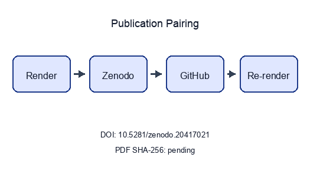
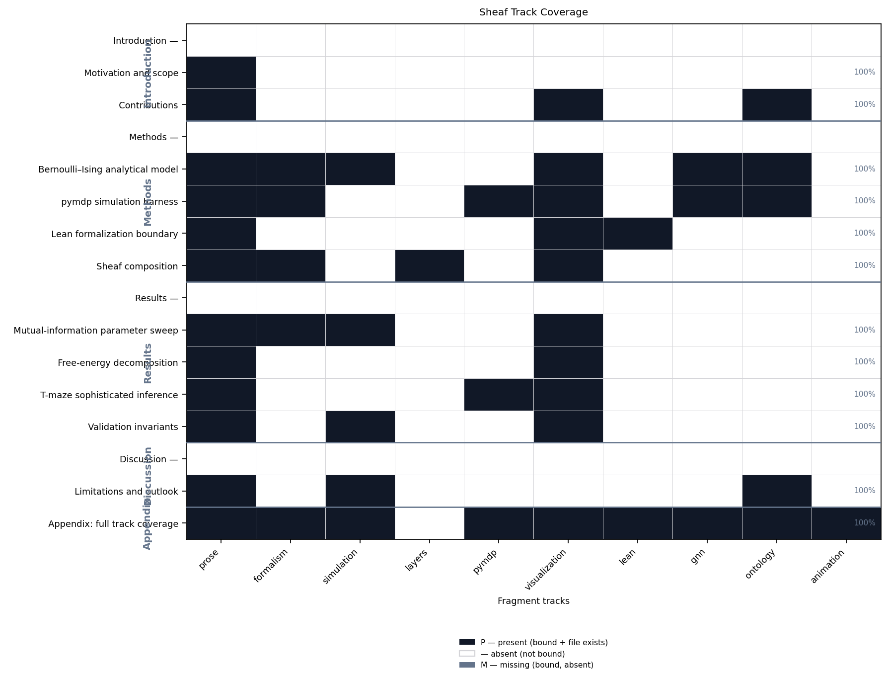
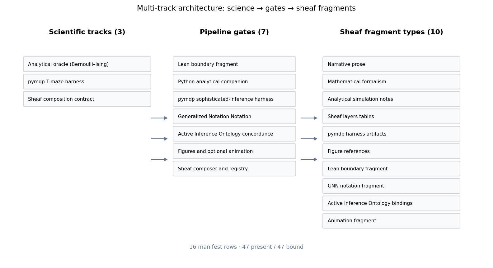
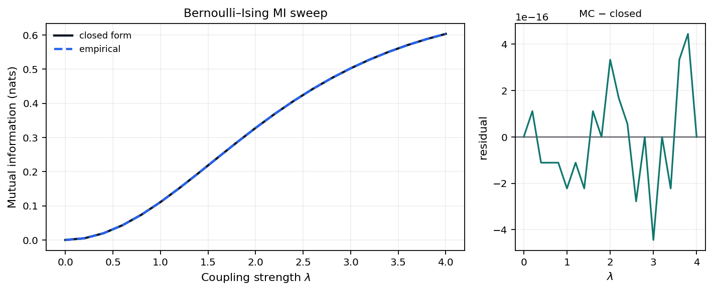
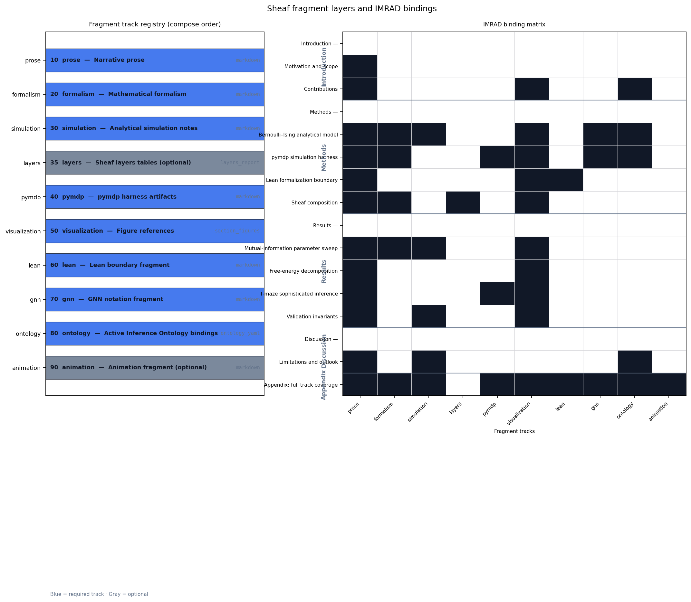
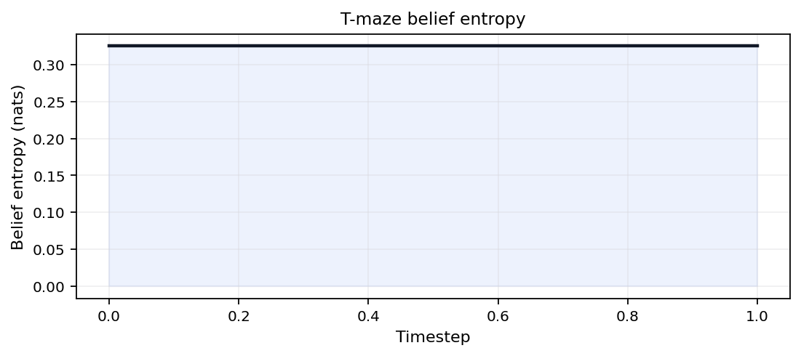
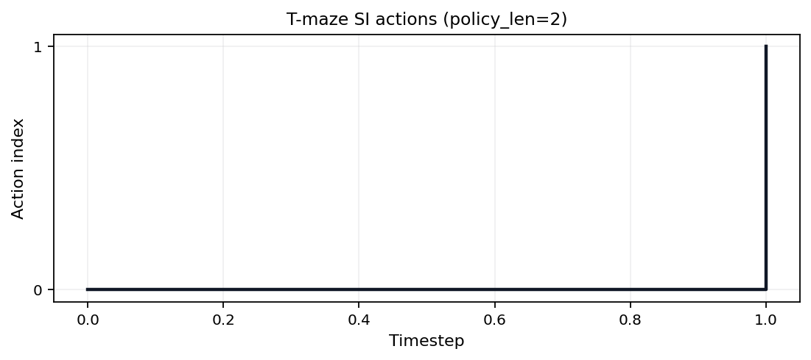
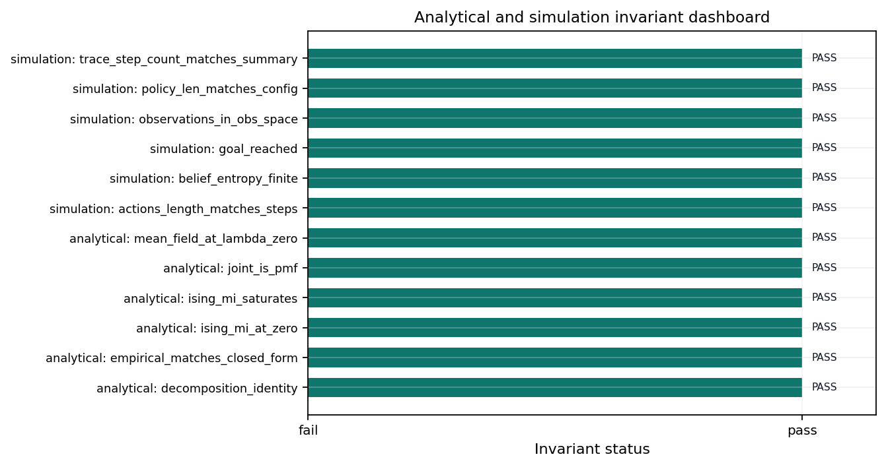

State: unpublished / pending pairing
Pairing: pending — unresolved: - ✗ GitHub release
URL: pending - ✗ PDF SHA-256: pending
| Field | Value |
|---|---|
| Title | Active Inference Multi-Track Exemplar |
| Version | 0.3.0 |
| Concept DOI | 10.5281/zenodo.20417021 |
| Version DOI | 10.5281/zenodo.20420352 |
| GitHub | docxology/template_active_inference |
| Zenodo | https://zenodo.org/records/20417021 |
| SHA-256 | pending |
| SHA-512 | pending |
../data/transmission_manifest.json.Structured manifest:
../data/transmission_manifest.json

Stego: off | overlays text | barcodes on | XMP on |
manifest on → ./secure_run.sh
This page summarizes which sheaf fragment tracks are
bound for each IMRAD row in manuscript/sheaf/manifest.yaml.
The matrix is regenerated at compose time.
Totals: 47 present / 47 bound / 0 missing (gray).
| Color | Meaning |
|---|---|
| Black | Track present (bound and fragment exists) |
| White | Absent (not bound for this row) |
| Gray | Missing (bound but fragment file absent) |
Introduction (group)
Motivation and scope
Contributions ## Methods
Methods (group)
Bernoulli–Ising analytical model
pymdp simulation harness
Lean formalization boundary
Sheaf composition ## Results
Results (group)
Mutual-information parameter sweep
Free-energy decomposition
T-maze sophisticated inference
Validation invariants ## Discussion
Discussion (group)
Limitations and outlook ## Appendix
Appendix: full track coverage

Coverage overview. Sheaf track coverage matrix: 16 IMRAD rows × 10 fragment columns. Black = present (P), white = absent (—), gray = missing (M). Counts: 47 present / 47 bound / 0 missing.
Appendix row 16_appendix_full_sheaf.md binds 9 fragment
track types as a composability proof (registry defines 10 types;
optional layers is methods-only).
We study a minimal Active Inference stack on toy models: a Bernoulli–Ising analytical oracle, a pymdp T-maze rollout, and a sheaf-indexed compose contract that binds 10 fragment tracks into 12 flat IMRAD sections. Claims are limited to those models and their generated artifacts.
sec. 1 reports a 16-row coverage matrix (4 IMRAD group headers) regenerated from the live manifest at compose time. sec. 6 documents the T-maze harness aligned with pymdp sophisticated_inference examples.
sec. 12 records 12 / 12 invariant checks passed. SI planning horizon: 2 steps. Sweep RMSE 0 nats bounds analytical–empirical agreement on the coupling grid.
This manuscript couples three tracks on toy Active Inference models: a Bernoulli–Ising analytical oracle, a pymdp T-maze rollout, and a sheaf-indexed assembly contract that binds 10 optional fragment tracks under an IMRAD outline. The scientific claims stay within those models and their generated artifacts; they are not empirical statements about biological agents.
Three scientific tracks (analytical, pymdp, sheaf composition) map onto 10 composable fragment types and 7 pipeline gates (fig. 2). sec. 1 summarizes which fragment tracks bind to each manifest row. sec. 8 documents the compose pipeline, coverage semantics (eq. 2), and strict validation gates.
The pymdp track follows the pymdp
sophisticated_inference examples with a minimal T-maze and planning
horizon policy_len = 2. Other sections cite sec. 6 instead
of repeating that reference.
fig. 2 maps the three scientific tracks to 7 pipeline gates and 10 composable fragment renderers. Measured invariant checks: 12 / 12 passed.
Ontology-facing symbols in the analytical
track—location, observation,
policy, and expected_free_energy—map to
HiddenState, ObservationLikelihood,
PolicyPosterior, and
ExpectedFreeEnergy in the GNN concordance figure
(fig. 4, sec. 5).

Figure I1 (intro). Multi-track architecture: analytical, pymdp, and sheaf composition lanes mapped to 7 pipeline gates and 10 composable fragment types.
expected_free_energy →
ExpectedFreeEnergylocation → HiddenStateobservation →
ObservationLikelihoodpolicy → PolicyPosteriorWe study a minimal K=2 Bernoulli / Ising coupling as the analytical companion to multi-track verification. The entangled joint eq. 1 yields closed-form mutual information \(I(\lambda)\), which serves as an oracle for Monte Carlo checks and GNN round-trips in sec. 9 (fig. 4).
Measured sweep grid points: 21. Invariants passed: 12 / 12.
The entangled joint over binary policies satisfies
\[ q_\lambda(\pi) \propto E(\pi)\,\exp(\lambda J(\pi)), \qquad{(1)}\]
with symmetric Ising coupling \(J\) and deformation parameter \(\lambda\). Mutual information is \(I(\lambda)=\log 2 - H_b(\sigma(\lambda))\).
The analytical track writes a parameter sweep comparing closed-form and empirical mutual information across \(\lambda \in [0, 4]\) on 21 grid points (sec. 9, fig. 3).

Figure 1 (methods). Closed-form and Monte Carlo mutual information I(λ) for the symmetric Bernoulli-Ising toy across 21 grid points up to λ_max = 4; grid maximum 0.6031 nats on the measured sweep.
Figure 1b (methods). GNN ↔︎ ontology concordance for the Bernoulli–Ising toy (GNN v1.1).
The Bernoulli toy is declared in
gnn/bernoulli_toy.gnn.md (GNN v1.1). fig. 4 links GNN
variables to Active Inference Ontology terms bound in the analytical
ontology fragment; round-trip parity is checked before render.
Measured MI and sweep artifacts in sec. 9 ground the same symbol map used in the concordance diagram.
J → CrossStreamCouplingPotentialgamma → SophisticationWeightlam →
EntanglementDeformationParameterpi1 → Stream1PolicyVectorpi2 → Stream2PolicyVectorq_joint → EntangledJointPosteriorSophisticated inference (planning horizon). This
section documents a pymdp state-inference harness on a
minimal T-maze (fig. 5) with planning horizon
policy_len = 2. Default mode is
state_inference (T-maze rollout via
simulate_si_tmaze.py). The Agent constructs a multi-step
policy set (num_policies logged in SI artifacts); per-step
belief entropy is aggregated as
mean_belief_entropy.
Graph-world infer_policies is an opt-in extension stub —
see tracks.yaml extension_tracks.graph_world.
For the reference workflow, see sec. 3; measured rollouts appear in
sec. 11.
Mean belief entropy across steps: 0.3251.
Given generative matrices \(A,B,C,D\), pymdp computes state beliefs
\(q(s)\) via variational inference
(infer_states). The Agent is configured with planning
horizon \(H =\) 2, which defines the
policy depth used when constructing candidate policies
(logged as num_policies in the SI summary artifact; see
sec. 11).
The default harness records belief entropy per step; extending to
full expected-free-energy policy selection (infer_policies)
is documented as a follow-on track in sec. 13.
SI artifacts (summary, trace, optional JSONL log) record step count, actions, observations, and belief entropy for sec. 11. Steps recorded: 2.

Figure M1 (methods). T-maze generative model schematic (2-step policy horizon, state_inference mode).
See gnn/si_tmaze.gnn.md for a GNN view of the T-maze
hidden state, observation, and policy variables with ontology
bindings.
belief_entropy → BeliefEntropyloc → HiddenStateobs → ObservationLikelihoodpi → PolicyPosteriorThe Lean track provides minimal boundary witnesses checked by
lake build under
lean/TemplateActiveInference/. fig. 6 summarizes proved
versus deferred statements; fragments cite theorem names without
duplicating proof scripts in prose.
Horizon witnesses link back to the analytical toy (sec. 5) and the pymdp planning depth (sec. 6).

Figure M2 (methods). Lean formalization boundary: module witnesses checked by lake build.
Lean module
TemplateActiveInference.SophisticatedInference declares the
planning horizon parameter and a witness that horizon \(> 1\) distinguishes sophisticated from
myopic inference.
Build via lake build under lean/.
Each manifest row in manuscript/sheaf/manifest.yaml
binds fragment tracks from manuscript/sheaf/tracks.yaml. A
track supplies a renderer, compose order, label, and optional flag; the
composer flattens the binding set into one Markdown section for PDF and
web output.
The operational claim is auditable binding: analytical, simulation, pymdp, visualization, Lean, GNN, ontology, and optional media fragments attach to each IMRAD row under eq. 2 (P present, — unbound, M missing).
fig. 7 summarizes 10 fragment types and their IMRAD bindings. Generated tables below list every track definition and section×track binding at compose time.
uv run python scripts/compose_manuscript.py
uv run python scripts/compose_manuscript.py --validate-only --strictEach run emits output/data/sheaf_coverage_matrix.json
and regenerates coverage artifacts. Partial compose
(--section) is draft-only; the matrix always reflects the
full manifest. Coverage totals appear on sec. 1; discussion scope is in
sec. 13.
Let \(\mathcal{T}\) be the
registered fragment-track set and \(\mathcal{S}\) the ordered IMRAD manifest
rows. Each track \(t \in \mathcal{T}\)
maps to renderer \(R(t)\), label \(L(t)\), optional flag \(O(t)\), and compose-order index \(\pi(t)\) from
manuscript/sheaf/tracks.yaml. Each row \(s \in \mathcal{S}\) carries a partial
binding map \(F_s : \mathcal{T}
\rightharpoonup \mathrm{Path}\) from track ids to fragment
paths.
The coverage cell is
\[ B(s,t) \in \{\mathrm{P}, \mathrm{—}, \mathrm{M}\} \qquad{(2)}\]
derived from \(F_s(t)\) and filesystem existence at compose time: P when a bound fragment exists, — when the track is unbound for that row, and M when a bound path is missing. The current regenerated matrix reports 47 present / 47 bound / 0 missing cells.
Registry size: \(|\mathcal{T}| = 10\) types across 16 IMRAD manifest rows. Formal track definitions and section×track bindings appear in the generated tables below.

Figure 6 (methods). Sheaf layers overview: registry stack (compose order, renderer ids) and IMRAD binding heatmap for 10 fragment types across 16 manifest rows (47 present / 47 bound / 0 missing).
Compose order and renderer bindings from
manuscript/sheaf/tracks.yaml.
| Order | Track id | Label | Renderer | Optional |
|---|---|---|---|---|
| 10 | prose |
Narrative prose | markdown |
No |
| 20 | formalism |
Mathematical formalism | markdown |
No |
| 30 | simulation |
Analytical simulation notes | markdown |
No |
| 35 | layers |
Sheaf layers tables | layers_report |
Yes |
| 40 | pymdp |
pymdp harness artifacts | markdown |
No |
| 50 | visualization |
Figure references | section_figures |
No |
| 60 | lean |
Lean boundary fragment | markdown |
No |
| 70 | gnn |
GNN notation fragment | markdown |
No |
| 80 | ontology |
Active Inference Ontology bindings | ontology_yaml |
No |
| 90 | animation |
Animation fragment | markdown |
Yes |
Track count: 10 registered fragment types.
Section rows versus fragment track columns. P = present (bound and file exists); — = absent (not bound); M = missing (bound, file absent).
| Section | prose | formalism | simulation | layers | pymdp | visualization | lean | gnn | ontology | animation |
|---|---|---|---|---|---|---|---|---|---|---|
| Introduction (group) | — | — | — | — | — | — | — | — | — | — |
| Motivation and scope | P | — | — | — | — | — | — | — | — | — |
| Contributions | P | — | — | — | — | P | — | — | P | — |
| Methods (group) | — | — | — | — | — | — | — | — | — | — |
| Bernoulli–Ising analytical model | P | P | P | — | — | P | — | P | P | — |
| pymdp simulation harness | P | P | — | — | P | P | — | P | P | — |
| Lean formalization boundary | P | — | — | — | — | P | P | — | — | — |
| Sheaf composition | P | P | — | P | — | P | — | — | — | — |
| Results (group) | — | — | — | — | — | — | — | — | — | — |
| Mutual-information parameter sweep | P | P | P | — | — | P | — | — | — | — |
| Free-energy decomposition | P | — | — | — | — | P | — | — | — | — |
| T-maze sophisticated inference | P | — | — | — | P | P | — | — | — | — |
| Validation invariants | P | — | P | — | — | P | — | — | — | — |
| Discussion (group) | — | — | — | — | — | — | — | — | — | — |
| Limitations and outlook | P | — | P | — | — | — | — | — | P | — |
| Appendix: full track coverage | P | P | P | — | P | P | P | P | P | P |
Totals: 47 present / 47 bound / 0 missing.
| Symbol | Coverage color | Meaning |
|---|---|---|
| P | Black | Track present (bound and fragment exists) |
| — | White | Absent (not bound for this section) |
| M | Gray | Missing (bound but fragment file absent) |
We sweep coupling strength \(\lambda\) on a grid of 21 points up to \(\lambda_{\max} = 4\). Closed-form mutual information from eq. 1 is compared to Monte Carlo estimates from the analytical module (sec. 5).
Measured invariant checks: 12 / 12 passed on the clean tree.
The sweep reuses the entangled joint defined in eq. 1 (sec. 5). Mutual information \(I(\lambda)=\log 2 - H_b(\sigma(\lambda))\) is evaluated on the same \(\lambda\) grid as the analytical oracle and Monte Carlo estimates.
Empirical MI estimates use fixed seed 0 and share the same \(\lambda\) grid as the closed-form sweep (sec. 5, fig. 3).
Figure 2 (results). Closed-form and Monte Carlo mutual information I(λ) for the symmetric Bernoulli-Ising toy across 21 grid points up to λ_max = 4; grid maximum 0.6031 nats on the measured sweep.
Free energy against the entangled prior is evaluated along the same \(\lambda\) grid used for the MI sweep. The curve highlights how deformation strength trades off prior alignment and coupling energy in the analytical toy.
Saturation MI (grid maximum on the measured λ sweep): 0.6031 nats.

Figure 3 (results). Free energy of the entangled posterior relative to the mean-field prior across the hyperparameter sweep (grid points 21).
The pymdp harness rolls out a T-maze sophisticated-inference agent
with planning horizon 2. Summary metrics land in
output/data/si_tmaze_summary.json.
Steps recorded: 2. Mean belief entropy: 0.3251.
Rollout trace: output/data/si_tmaze_trace.json. JSONL
run log: output/logs/pymdp_runs.jsonl.

Figure 3a (results). Belief entropy over time for the T-maze rollout (mean 0.3251 nats).

Figure 3b (results). Observation and action traces for the T-maze rollout (action diversity 2).

Figure 3c (results). Discrete action index over time for the pymdp T-maze rollout (policy length 2).
The analytical invariant registry runs before PDF rendering (sec. 5). On a clean checkout 12 / 12 checks pass in the merged validation report, which records simulation invariants when the pymdp harness ran (sec. 11).
fig. 12 lists each analytical and simulation gate; failures block publication artifacts. See sec. 8 for how invariant counts hydrate manuscript tokens.
Simulation invariants merge into the analytical report after the pymdp harness runs (sec. 11). fig. 12 summarizes pass/fail status for both domains on the clean tree.

Figure 5 (results). Invariant dashboard: 12 / 12 merged analytical and simulation checks from the validation registry.
The Bernoulli–Ising toy, T-maze harness, and sheaf composition model
are pedagogical. They validate analytical consistency, artifact wiring,
renderer dispatch, and manuscript hydration—not empirical claims about
biological agents. Default pymdp mode is state_inference
with planning horizon 2; full policy inference remains an opt-in
extension (sec. 6).
sec. 1 and sec. 14 make binding state auditable under strict compose
validation (sec. 8). Opt-in pipeline extensions in
tracks.yaml extension_tracks (belief GIF via
render_animation.py, graph-world SI stub) add artifacts
outside the default analysis DAG; the appendix row already binds an
animation sheaf fragment without new manifest rows.
Sweep RMSE 0 nats and SI goal reached 1 summarize measured agreement on the declared grids and rollout. Future work includes full expected-free-energy policy selection, richer graph-world rollouts, and expanded Lean proofs beyond the boundary witnesses in sec. 7.
The discussion ontology binds coverage_semantics to the
audit matrix in sec. 1, pedagogical_scope to the
non-empirical scope of the toy models, and
state_inference_mode to the pymdp harness contract in
sec. 6.
Measured pymdp rollout (state_inference, config hash
ea4b126a9c22f22f): mean belief entropy 0.3251 nats over 2
steps; goal reached flag 1; action diversity 2.
Analytical sweep residual RMSE 0 nats (max residual 0). Coverage audit: 47 present / 47 bound / 0 missing cells on the IMRAD matrix.
coverage_semantics → Coverage matrix
semanticspedagogical_scope → Pedagogical
scopestate_inference_mode → State inference
harnessThis section is the composability proof for the
manifest-indexed sheaf model: all 9 appendix-bound fragment tracks
render into one flat manuscript section without section-specific compose
branches. The registry defines 10 composable types; optional
layers is methods-only and excluded from this row. The
animation fragment is bound here as an optional registry
type alongside prose, formalism, simulation, pymdp, visualization, lean,
gnn, and ontology tracks.
The proof is a publication-systems check (eq. 3). It demonstrates that heterogeneous fragments share one registry, manifest, renderer dispatch path, coverage matrix, and hydration boundary; it does not assert that every track carries equal scientific weight.
For each track \(t \in
\mathcal{T}_{\mathrm{Full}}\), the appendix row binds a fragment
path \(f(t)\) and the composer emits
<!-- sheaf-track:t --> before the rendered body.
Generated renderers such as section_figures and markdown
renderers pass through the same resolve_track_body()
dispatch, so the appendix exercises the common compose interface rather
than a bespoke appendix path.
\[ |\mathcal{T}_{\mathrm{Full}}| = 9 \qquad{(3)}\]
The fragment registry defines 10 composable track types; optional
layers is bound on the methods sheaf section only. Optional
animation is bound in this appendix proof; the opt-in GIF
extension in tracks.yaml extension_tracks is
separate from this fragment slot.
Analytical sweep artifacts feed sec. 9 and sec. 12; simulation invariants merge after sec. 11. No additional path listing is required beyond those Results sections.
pymdp harness summary: output/data/si_tmaze_summary.json
(mean belief entropy, action trace). Full log:
output/logs/pymdp_runs.jsonl.
Figure A1 (appendix). Closed-form and Monte Carlo mutual information I(λ) for the symmetric Bernoulli-Ising toy across 21 grid points up to λ_max = 4; grid maximum 0.6031 nats on the measured sweep.
Figure A2 (appendix). Discrete action index over time for the pymdp T-maze rollout (policy length 2).
Figure 4. Sheaf track coverage matrix: 16 IMRAD rows × 10 fragment columns. Black = present (P), white = absent (—), gray = missing (M). Counts: 47 present / 47 bound / 0 missing.
Lean modules under lean/TemplateActiveInference/ declare
horizon and coupling witnesses. Build with lake build in
lean/; fig. 6 summarizes proved versus deferred statements
for this boundary fragment.
GNN declarations: gnn/bernoulli_toy.gnn.md and
gnn/si_tmaze.gnn.md. fig. 4 and sec. 5 document ontology
concordance for the Bernoulli toy; SI notation extends the same pattern
under sec. 6.
belief_entropy → BeliefEntropyexpected_free_energy →
ExpectedFreeEnergylocation → HiddenStateobservation →
ObservationLikelihoodpolicy → PolicyPosteriorsheaf_track → SheafFragmentAnimation is an extension sheaf track (optional GIF
via scripts/render_animation.py). This appendix row
documents the track binding only; default publication uses static SI
figures (sec. 11, fig. 11) rather than embedding motion assets unless
explicitly promoted.
Analytical oracles (sec. 5), pymdp rollouts (sec. 11), and sheaf composition (sec. 8) share one auditable manuscript contract: measured artifacts hydrate 12 composed sections, sec. 1 reports binding state, and strict compose validation blocks gray matrix cells before PDF rendering.
The T-maze harness runs in state_inference mode with
config hash ea4b126a9c22f22f; sweep RMSE 0 nats summarizes
analytical–empirical agreement on the toy coupling grid. sec. 12 merges
analytical and simulation gates; sec. 13 states scope and extensions.
Scientific claims remain confined to declared models—not empirical
statements about biological agents.
See manuscript/references.bib for bibliography entries
cited in the composed sections.
Release: v0.3.0 · DOI
10.5281/zenodo.20417021 · SHA-256 pending… ·
pairing pending
Prior: No prior releases.